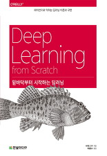
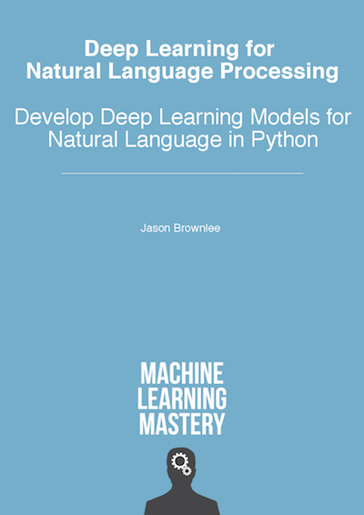

108.413A: Computational Linguistics
Hyopil Shin (Dept. of Linguistics, Seoul National University)
hpshin@snu.ac.kr, http://knlp.snu.ac.kr
Mon/Wed from 2:00 to 3:15 in building 8, 303
T.A: SangA Lee(visualjan@snu.ac.kr)


(http://www.theverge.com/2016/3/11/11208078/lee-se-dol-go-google-kasparov-jennings-ai)
Course Description
Recently deep learning approaches have obtained very high performance across many different computational linguistics or Naltural Language Processing (NLP). This course provides an introduction to the Neural Network Model from scratch and deep learning methodologies appled to NLP. On the model side we will cover word vector representations, recurrent neural networks, long-shot-term-memory models recursive neural networks, and convolutional neural networks. The first half part of the class focuses on the basics of neural network models and the second part covers actual implementations of NLP tasks such as sentiment analysis(movie/text classifications), and text generations. We will take advantage of modules from keras and python 3.x. Through lectures and programming assignments students will learn the necessary implementation tricks for making neural networks work on practical problems.
Updates
- Deep Learning From Scratch source codes has been added(March 23)
Useful Sites
- Natural Language Processing with Python
- 모두 를 위한 머신러닝/딥러닝(홍콩과기대 김성훈 교수)
- CS231n: Convolutional Neural Networks for Visual Recognition (Stanford Class)
- CS224d: Deep Learning for Natural Language Processing (Stanford Class)
- WILDML: AI, DEEP LEARNING, NLP
- 김태영의 keras 강좌
- Deep Learning From Scratch source codes
Textbook

Deep Learning from Scratch (밑바닥부터 시작하는 딥러닝), by 사이토 고키, 한빛출판사. Deep Learning From Scratch source codes

Deep Learning for Natural Language Processing, by Jason Brownlee.
Syllabus
| Date | Topics | What you have to do | Assignment | |
| 1 | 3/5-3/10 |
What is NaturaI Language Processing (Jurafsky's NLP Online Course Material) Preliminaries for NLP
|
Install Python 3.x and keras, and NLTK(Natural Language ToolKit) |
|
| 2 | 3/12-3/17 |
Preliminaries for NLP
|
How to Implement Simple Linear Regression From Scratch with Python |
Assignment 1: Brwon Corpus 중에서 일부를 발췌한 BROWN_A1 코퍼스를 이용하여 이용하여 'I think I will get the best score in the class" 라는 문장의 확률을 출력하는 프로그램을 작성하라. (1) 바이그램의 MLE를 이용한 확률과 바이그램 확률(전체 바이그램 중에 특정 바이그램 수에 따른) 각각에 따른 위 문장의 확률을 출력(2) ", ' 등 모든 기호를 tokenize할 때 제거할 수 있으면 제거하라(3) WordCounting and Printing Python Sample (python2), 이 WordCountying and Printing Python Sample (python3) 용할 수도 있고 nltk의 모듈도 사용 가능(4) 관련 nltk chapter 2, chapter3 참조(Filename: YourStudentIDnumber_hw1.py) Due. March. 21, 13:59:59' p.m. through ETL |
| 3 | 3/19-3/24 |
Introduction to a Neural Network |
|
|
| 4 | 3/23-3/31 |
Introduction to a Neural Network |
|
|
| 5 | 4/2-4/7 | 딥러닝 개념잡기 |
Assignment 2: Simple Vanila Forward Neural Network 모델 구현 (Due 9th of April) : SimpleNetData has been changed!. Please download it again and check your program! |
|
| 6 | 4/9-4/14 |
Assignment 3: Simple Forward Neural Network Upgrade 버전 (Due 16th of April) |
||
| 7 | 4/16-4/2 |
|
|
|
| 8 | 4/23-4/28 |
MidTerm Test Vector Semantics from SLP 3rd Edition Draft Semantics with Dense Vectors from SLP 3rd Edition Draft Computing with Word Senses from SLP 3rd Edition Draft Efficient
Estimation of Word Representations in Vector
Space paper by Mikolov et al.(2013) Efficient Estimation of Word Representations in Vecctor handout |
|
|
| 9 | 4/30-5/5 |
Implementing a Neural Network Using Keras
|
||
| 10 | 5/7-5/12 |
|
|
Assignment 5: Assignment 3에서 사용한 SimpleNetData2.csv 자료를 바탕으로 keras를 활용한 multi layer net으로 구현하여라. ‘피마족 인디언 당뇨병 발병 데이터셋’ 의 예에서 처럼 training, test, evaluation 모듈을 다 구현하라. ‘피마족 인디언 당뇨병 발병 예'에서 처럼 Dense 층위는 세 개를 사용하나 성능을 높이기 위해 다양한 패러미터 적용은 무방. Due: May, 16th, 13:59:59 p.m. |
| 11 | 5/14-5/19 |
|
||
| 12 | 5/21-5/26 |
|
|
Assignment 6: LSTM을 사용한 악보 prediction 모형 만들기. 순환신경망만들기 사이트를 참조로 하여 "겨울나무" 악보를 학습하여 예측하는 모델을 만들어라. 예제에서 처럼, MLP, LSTM, LSTM stateful, LSTM with two features를 다 구현하도록 하라. Due May, 28th, 13:59:59 p.m |
| 13 | 5/28-6/2 |
|
|
Final Project : 한국어 뉴스 기사분류 |
| 14 | 6/4-6/9 |
|
|
|
| 15 | 6/11-6/16 |
|
{kind=link}